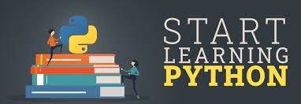
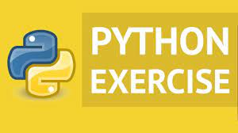

به نام یگانه هستی عالم
سلام دوستان در این وبسایت قصد دارم مراحل یادگیری پایتون رو که از استادم جناب آقای مهندس محسن افشین یاد گرفتم براتون توضیح بدم.
مرحله اول:
برای یادگیری دستورات پایتون به ساده ترین روش
اینجا کلیک کنید
یا روی عکس زیر کلیک کنید

مرحله دوم:
با حل مساله در واقع شما آنچه به عنوان سینتکس یاد گرفته اید به کار میگیرید تا مساله را حل کنید به جرات می توان گفت که حل مساله مهم ترین بخش مهارت یک برنامه نویس به شمار می آید بنابراین بایستی تا می توانید خود را به چالش بکشید و مسایل مختلف حل کنید و راه حل خود را با ورودی های مختلف امتحان کنید.

برای دیدن مسایل روی عکس کلیک کنید
مرحله سوم:
در این مرحله بایستی یک مخزن در سایت گیت هاب بگذارید و پروژه های خود را داخل مخزن قرار دهید در واقع با این سایت میتوانید کدهای خود را با برنامه نویسان در سراسر دنیا به اشتراک بگذارید و نظرات آنها را بگیرید و در قسمتهایی که مشکل دارید کمک بگیرید
 برای دیدن فیلم آموزشی روی عکس کلیک کنید
برای دیدن فیلم آموزشی روی عکس کلیک کنید